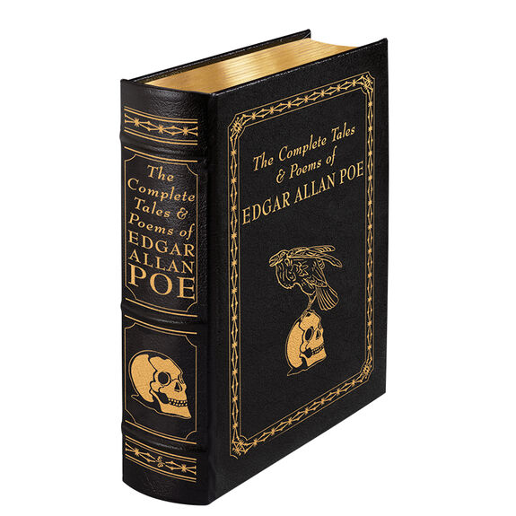
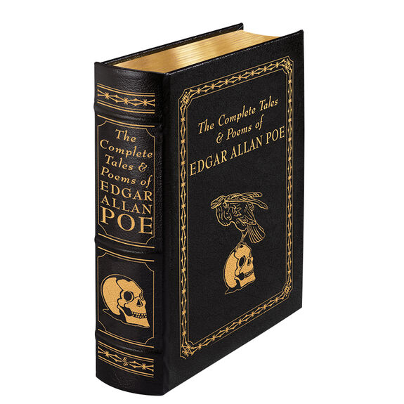

Poe's best-known fiction works are Gothic horror,[90] adhering to the genre's conventions to appeal to the public taste.[91] His most recurring themes deal with questions of death, including its physical signs, the effects of decomposition, concerns of premature burial, the reanimation of the dead, and mourning.[92] Many of his works are generally considered part of the dark romanticism genre, a literary reaction to transcendentalism[93] which Poe strongly disliked.[94] He referred to followers of the transcendental movement as "Frog-Pondians", after the pond on Boston Common,[95][96] and ridiculed their writings as "metaphor—run mad,"[97] lapsing into "obscurity for obscurity's sake" or "mysticism for mysticism's sake".[94] Poe once wrote in a letter to Thomas Holley Chivers that he did not dislike transcendentalists, "only the pretenders and sophists among them".[98] Beyond horror, Poe also wrote satires, humor tales, and hoaxes. For comic effect, he used irony and ludicrous extravagance, often in an attempt to liberate the reader from cultural conformity.[91] "Metzengerstein" is the first story that Poe is known to have published[99] and his first foray into horror, but it was originally intended as a burlesque satirizing the popular genre.[100] Poe also reinvented science fiction, responding in his writing to emerging technologies such as hot air balloons in "The Balloon-Hoax".[101] Poe wrote much of his work using themes aimed specifically at mass-market tastes.[102] To that end, his fiction often included elements of popular pseudosciences, such as phrenology[103] and physiognomy.